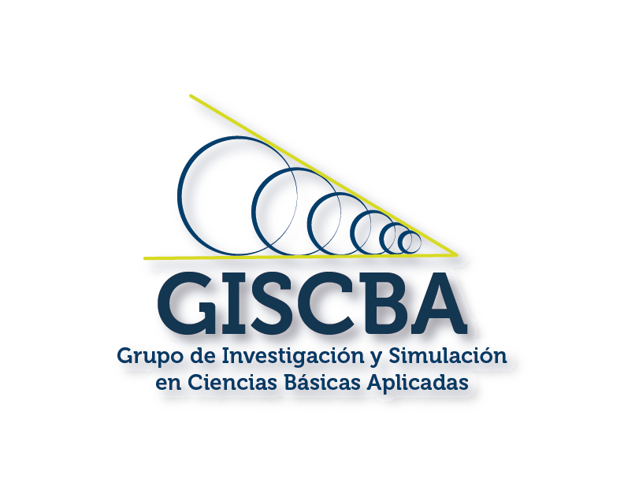
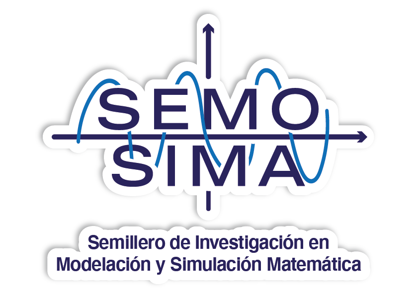
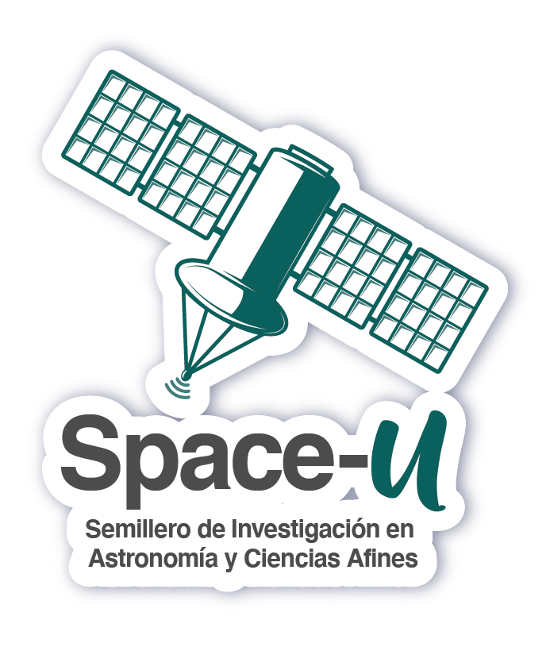
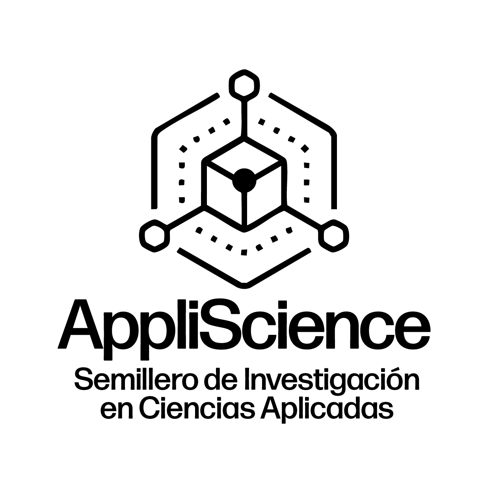

El Grupo de Investigación y Simulación de las Ciencias Básicas Aplicadas (GISCBA) fue creado entre los años 2015 y 2016 por un grupo de profesores del Departamento de Ciencias Básicas (DCB) de la Institución Universitaria Antonio José Camacho (UNIAJC). Su propósito es anidar proyectos de investigación relacionados con la simulación y modelación en las áreas de matemáticas, física y estadística, disciplinas fundamentales en la formación de cualquier profesional.
GISCBA nació con una visión multidisciplinar, articulando líneas de investigación en didáctica de las matemáticas y la física, física de materiales, modelamiento matemático e instrumentación científica. Su misión ha sido generar aportes desde las ciencias básicas al contexto regional, forjando una sinergia entre la docencia, la investigación y la proyección social.
GISCBA es fundado por el Mg. Julián Andrés Ángel Jiménez junto a un equipo de profesores del DCB. Se establecen las primeras líneas de investigación y la misión de contribuir al desarrollo científico regional desde las ciencias básicas.
El grupo participa activamente en eventos de investigación de la UNIAJC como el ECEI del Decanato de Investigaciones (DAI). Sus investigadores avanzan en formación posgradual —maestrías y doctorados— en áreas afines a las ciencias básicas y la educación, ganando reconocimiento a nivel local.
El Mg. Milton Fabián Castaño asume la dirección de GISCBA, impulsando la participación de los docentes del DCB en convocatorias internas y externas de investigación. En este periodo se suscribe el Semillero de Simulación y Modelación Matemática (SEMOSIMA) al grupo, fortaleciendo la investigación formativa con estudiantes.
GISCBA traza su hoja de ruta hacia 2030, con metas claras en categorización ante MinCiencias, alianzas internacionales, organización del Congreso Internacional de Ciencias Básicas Aplicadas y articulación de semilleros con los programas académicos de la institución.
Reconocimiento institucional como grupo de investigación formal de la UNIAJC
Participación en convocatorias de investigación internas y de semilleros
Difusión de resultados en eventos institucionales, regionales, nacionales e internacionales
Promoción de la participación de docentes y estudiantes en procesos investigativos
Alianzas interinstitucionales para el desarrollo de proyectos colaborativos
Categorización ante MinCiencias, posicionando al grupo en el ecosistema científico nacional
Los semilleros son el espacio donde estudiantes y docentes trabajan conjuntamente en proyectos de investigación formativa, conectando la teoría con la práctica experimental y computacional. Actualmente GISCBA cuenta con los siguientes semilleros activos:

Semillero de Simulación y Modelación Matemática. Trabaja en proyectos de modelación de fenómenos con herramientas computacionales.

Semillero orientado a la exploración de fenómenos del universo y la física aplicada desde una perspectiva interdisciplinar.

Semillero enfocado en la aplicación de las ciencias básicas a problemas del entorno, vinculando investigación con proyección social.
Será reconocido como un grupo líder en investigación de ciencias básicas a nivel nacional e internacional, destacándose por la puesta en escena de proyectos innovadores con capacidad de establecer alianzas estratégicas para el fortalecimiento de la formación de investigadores y la generación de productos científicos de alta calidad. Desde su fundación en 2015, GISCBA se ha comprometido con el avance de las ciencias básicas a través de la investigación interdisciplinaria, la formación de nuevos investigadores y la colaboración internacional, contribuyendo al desarrollo científico y tecnológico de la educación superior.